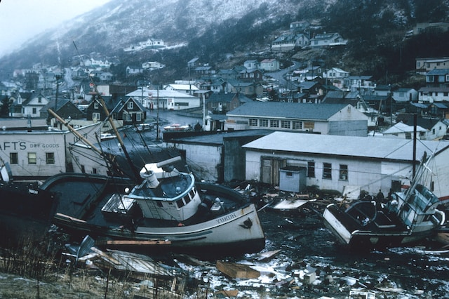

Description:
The inevitable destination we as a society are currently marching towards, disaster pairs real well with a fresh salad and red wine!
Ingredients:
- A global population of approximately 8 billion
- Two to three technological revolutions
- Trillions of dollars
- A dash of power
- Pinch of greed
- An ear of corn, pre-shucked OR bread crumbs
Steps:
- Pre heat the oven to 450
- Let your global population hit a good 8 billion or so. This may take a while, so patience is a virtue.
- While your population is growing, every once in a while, drop in a technological revolution to add some flavor.
- After the population hits the prescribed number, distribute the wealth, greed, and power to small proportions of it. Let's say .01% of the total population.
- Watch as that small percentage of people totally and completely screws over the rest of your dish. To mitigate any kind of boiling over, drop a few kernels of corn or bread crumbs among the rabble.
- The oven should be done preheating. Stick your head in and await the sweet embrace of death so you can avoid the consequences of your actions.
top
Back